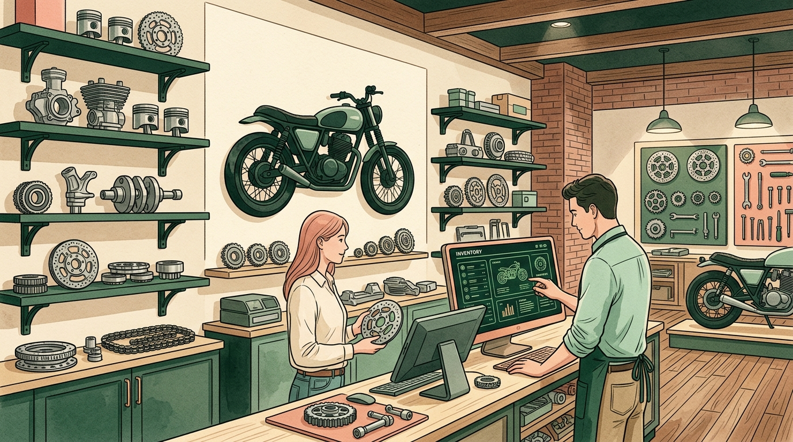

Distribuidora Comercial "Moto Repuestos El Centenario"
Defensa técnica integral de base de datos relacional, especificación formal de requerimientos, arquitectura modular web, ciclo de vida incremental y diseño detallado del sistema.

Distribuidora Comercial · Managua, Nicaragua
El compendio consolida una línea base ininterrumpida de 6 etapas formales de ingeniería de software:
Moto Repuestos El Centenario fue fundada en el año 2020 por Alejandra Alemán en Managua, Nicaragua. Entidad dedicada a la comercialización minorista de piezas mecánicas y consumibles para motocicletas de alta circulación (Yamaha, TVS, AKT, Serpento, Genesis, RK, CR) bajo calidades A, AA y AAA. La operación previa mediante bitácoras físicas provocaba desabastecimiento, falta de control en márgenes y demoras críticas en mostrador.
Garantizar certeza del 100% en existencias físicas en tiempo real y bloqueo estricto de saldos negativos.
Localización unificada por código, texto y compatibilidad de moto en tiempo P95 ≤ 3 segundos.
Cero pérdidas de transacciones comerciales mediante Kardex inmutable y recuperación RPO ≤ 24h.
Expectativas operacionales de la propietaria, vendedores, cajeros y bodegueros organizadas por frente de trabajo:
Capacidades técnicas modulares con verificación síncrona y matriz de trazabilidad bidireccional:
| StRS | SyRS Derivado | Módulo SRS |
|---|---|---|
| ST-REQ-001 | SYS-FN-003/PR-001 | SRS-CAT-001..004 |
| ST-REQ-002 | SYS-FN-010/US-002 | SRS-INV-002/005 |
| ST-REQ-004 | SYS-FN-014..018 | SRS-VNT-001..008 |
| ST-REQ-010 | SYS-SC-006..010 | SRS-AUD-001/002 |
| ST-REQ-013 | SYS-FN-027/PR-007 | SRS-BKP-001..003 |
Cobertura del 100%: ningún requisito queda sin caso de prueba verificable.
Entorno físico de operación, acuerdos de nivel de servicio (SLA) y atributos de calidad:
Evaluación ponderada multicriterio contrastando tres estilos arquitectónicos para el caso de estudio:
Capas acopladas sobre un esquema relacional común; despliegue simple pero con alto riesgo de degradación del código y dependencias cruzadas.
Módulos de negocio soberanos con transacciones ACID nativas y contratos explícitos; elimina sobrecostos de red e infraestructura distribuida.
Servicios independientes en red; descartado por sobrecarga de orquestación, latencia en LAN y riesgo de consistencia eventual en stock.
Organización en 4 capas desacopladas donde las dependencias apuntan siempre hacia el dominio (Principio PA-02):
7 Módulos Soberanos: Identidad, Catálogo, Compras, Inventario, Ventas, Caja y Reportería. Ningún módulo consulta directamente tablas de otro módulo.
Evaluación formal de modelos de desarrollo y justificación del descarte explícito de marcos inadecuados:
| Modelo Evaluado | Puntaje | Entrega Temprana | Veredicto |
|---|---|---|---|
| Incremental Controlado | 88 / 100 | Muy Alta (5/5) | Seleccionado |
| Proceso Unificado (UP/RUP) | 79 / 100 | Alta (4/5) | Sobrepeso doc. |
| Modelo Espiral | 78 / 100 | Alta (4/5) | Costo analítico |
| Cascada / Modelo V | 54 / 100 | Muy Baja (1/5) | Inflexible |
El modelo incremental permite validar verticalmente Catálogo e Inventario antes de construir el POS.
Despliegue ordenado de capacidades funcionales con criterios de aceptación demostrables y compuertas de control:
Autenticación RBAC, marcas y búsqueda paginada ≤ 3s.
SYS-FN-001..005 · P95 ≤ 3s
Órdenes de compra, Kardex inmutable y balance físico.
SYS-FN-006..012 · Stock no neg.
Cotización, venta atómica multimedio y arqueo de caja.
SYS-FN-013..018 · Rollback total
Devoluciones, reportería y backups automáticos.
SYS-FN-019..030 · RPO ≤ 24h
Selección de UML 2.5.1 Selectivo (90 pts) sobre Perfiles formales (86 pts) y DSML autónomo (66 pts), restringido a 7 diagramas del contrato:
Esquema relacional en Tercera Forma Normal (3FN) con 8 tablas maestras y transaccionales para garantizar integridad referencial estricta:
CHECK (calidad IN ('A','AA','AAA')).Rol_Administrador y Rol_Vendedor sin acceso no autorizado.VW_Alertas_Stock_Critico y VW_Auditoria_Ventas.
Secuencia atómica del caso crítico CU-VENTA bajo semántica ACID estricta:
M-DEP-01.
El compendio técnico demuestra cómo la ingeniería de software aplicada transforma el comercio tradicional: